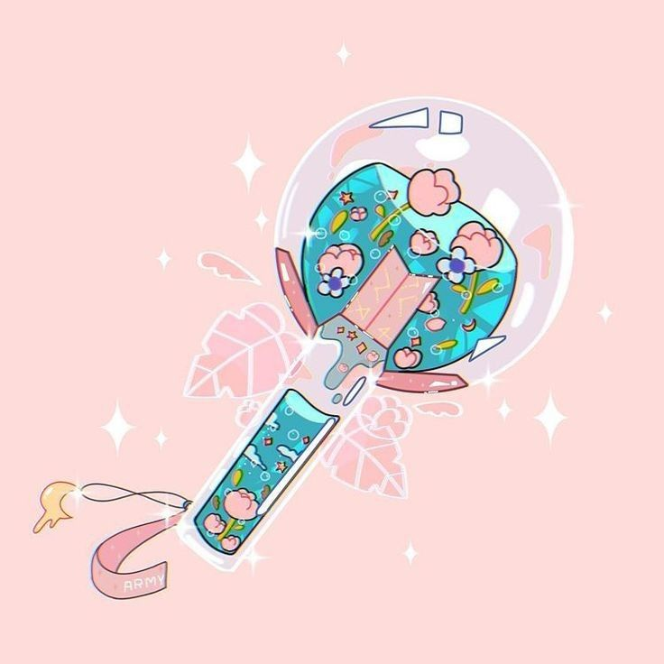
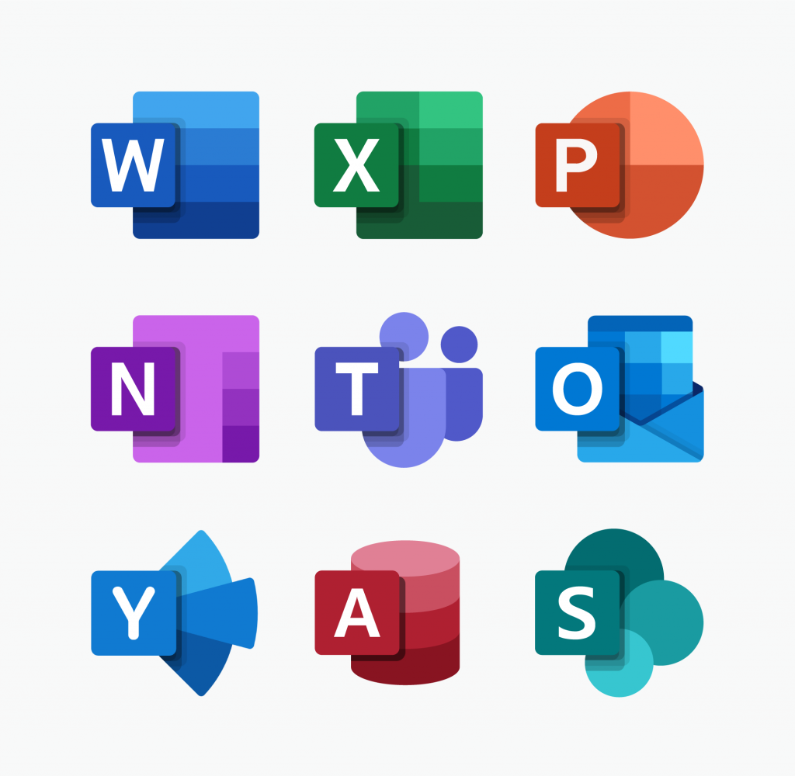
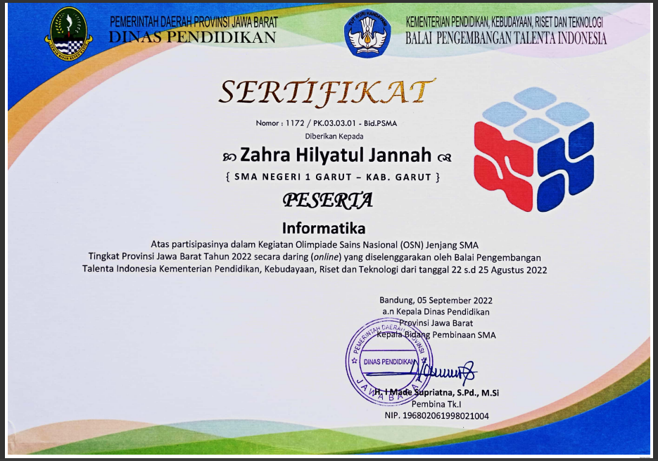
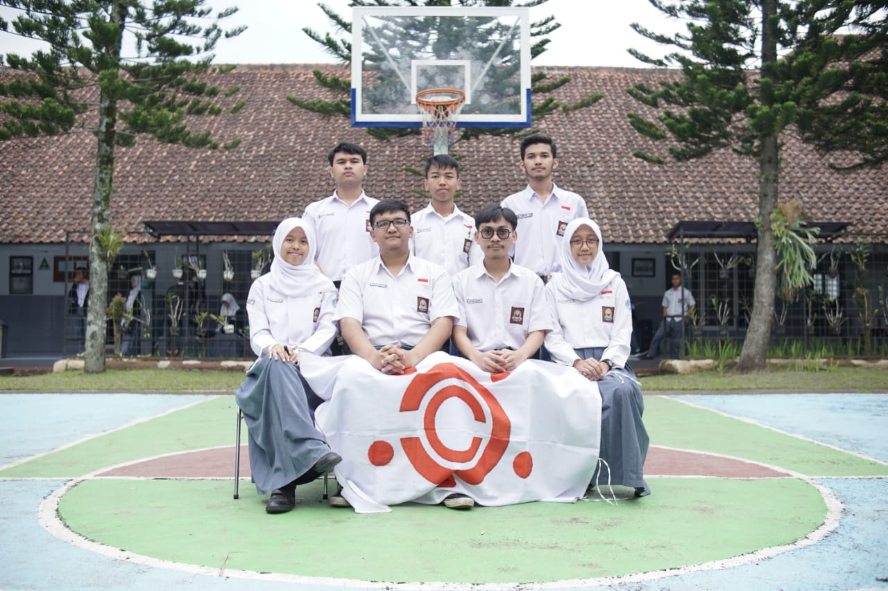

ZAHRA HILYATUL JANNAH
Halo! Nama saya Zahra Hilyatul Jannah. Saya adalah seorang mahasiswa baru di Jurusan Teknik Komputer dan Informatika. Dengan memilih untuk melanjutkan pendidikan di bidang teknik, saya memiliki ketertarikan khusus dalam pemrograman dan pengembangan perangkat lunak.
Let's go guys!! Stop Wishing and Start Doing🙌
PROFIL DIRI
Nama
Zahra Hilyatul Jannah
Tempat, Tanggal Lahir
Garut, 19 September 2005
Usia
18 tahun
Jenis Kelamin
Perempuan
Domisili
Bandung Barat
HOBI

Menikmati Musik K-Pop
Akhir-akhir ini saya memiliki ketertarikan kepada salah satu grup boyband dari Korea untuk mengisi waktu kosong dan menghibur diri. Musik mereka memberikan energi positif dan inspirasi dalam keseharian saya.
KEMAMPUAN TEKNIS

- Menggunakan aplikasi office seperti word, spreadsheet, dan slide presentation
- Menerapkan metode ilmiah dalam memecahkan masalah teknik informatika
- Menyelesaikan soal-soal pemrograman yang menguji problem solving
- Memiliki kemampuan dan kemauan belajar hal-hal baru
HARAPAN SETELAH LULUS

- Bekerja di bidang yang sesuai dengan ilmu dan keahlian yang dimiliki
- Mengembangkan keterampilan dan pengetahuan yang relevan dengan perkembangan zaman
- Berkontribusi positif dalam industri teknologi informasi
LESSON LEARN
- Memahami konsep dan fungsi GitHub sebagai platform untuk menyimpan, berbagi, dan mengelola kode secara online
- Mempelajari sintaks dan struktur HTML sebagai bahasa markup untuk membuat konten web
- Mempelajari sintaks dan struktur CSS sebagai bahasa style sheet untuk menambahkan gaya dan tampilan web
GALERY

